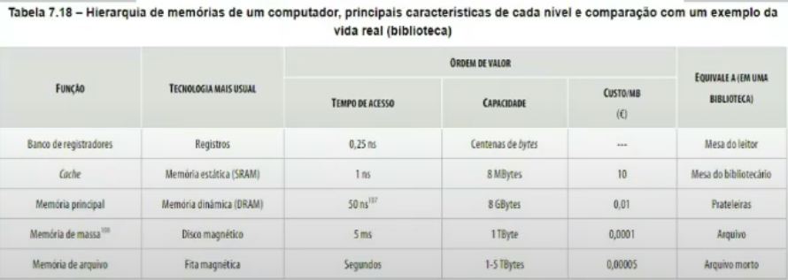
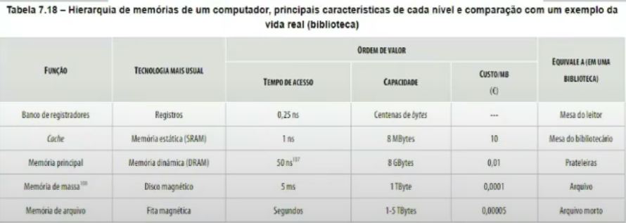
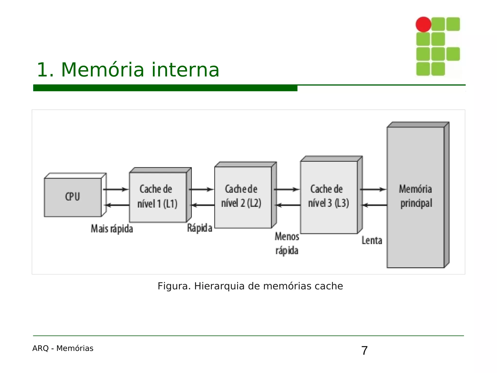
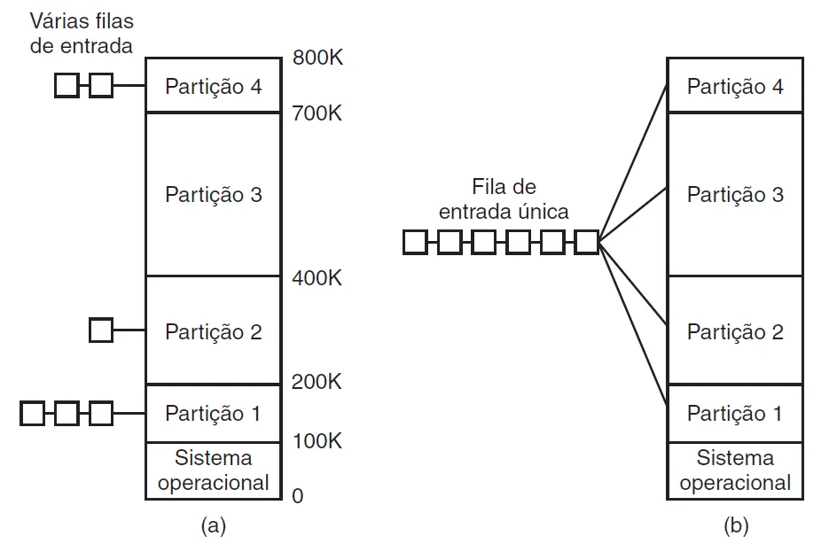
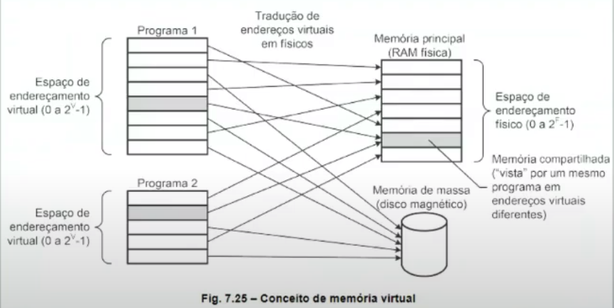

Disciplinas
-
SISTEMAS COMPUTACIONAIS. Concluído
Materiais
Vídeo 2 - Sistemas Computacionais - Gerenciamento de memória: Memória Virtual. sendProf° ministrante: Alessandra Alaniz Macedo (UNIVESP).
Conteúdo
Gerenciamento de memória.
Memória Virtual.
CONTEXTUALIZANDO.
- O Sistema Operacional tem duas funções:
- Interface para programas de usuário
- Gerência de recursos e controle de processo na CPU
- Gerenciamento de processos
- Gerenciamento de memória
GERENCIAMENTO DE MEMÓRIA.
- Quem faz?
- SO gerencia a memória e inclui a Memória Virtual
- O que faz?
- Usa técnicas para tornar a memória mais eficiente
- Monoprogramação e multiprogamação
- Por que faz?
- Busca do ideal para memória: grande, rápida, não volátil e de baixo custo
HIERARQUIA DE MEMÓRIAS.
 

O QUE É MEMÓRIA VIRTUAL (MV)?.
- É uma técnica que resulta em tempo de acesso a memória de disco (disco rígido - HD) estatisticamente não muito pior que a memória principal
- Seus princípios:
- Localidade (espacial e temporal)
- Função de mapeamento (tradução endereços pelo MMU)
- Funcionamento automático
EXPANSÃO DOS NÍVEIS COMO NUMA CACHE.
https://image.slidesharecdn.com/arq-memorias-200318002953/75/Arquitetura-de-Computadores-Memorias-7-2048.jpg A MV poder ser uma espécie de cache com níveis para relacionar a memória principal e a memória de disco
MONO E MULTIPROGRAMAÇÃO.
- Considerando a hierarquia de memória, pode-se gerenciá-la fazendo:
- Monoprogramação
- Multiprogramação
MULTIPROGRAMAÇÃO.
- Exige a divisão da memória principal para manipular os diferentes processos com as seguintes abordagens:
- Particionamento fixo (alocação estática)
- Particionamento variável (alocação dinâmica)
PARTICIONAMENTO VARIÁVEL.
https://miro.medium.com/v2/resize:fit:720/format:webp/1*MR_BGLcKnzGEqf28Y_rHLw.png CONCEITO BÁSICO DE MEMÓRIA VIRTUAL: HARDWARE + SOFTWARE.
MEMORY MAMAGEMENT UNIT (MMU).
- É um dispositivo de hardware (um circuito)
- Faz a tradução do endereço lógico (virtual ou lógico usado pelo programa) em físico (da memória de fato)
MEMÓRIA VIRTUAL.
- Nem os programas e nem a memória física tem que usar todo o espaço de endereçamento
- O espaço de endereçamento define os limites do endereçamento
- O mecanismo de tradução de endereços deve saber quais faixas de endereçamento estão sendo usadas no nível virtual e físico
VANTAGENS DA MEMÓRIA VIRTUAL.
- O espaço virtual pode ser maior que o físico
- É um excelente suporte para a coexistência de vários programas
- Compartilhamento de memória física ou periféricos entre processos, mesmo em endereços virtuais diferentes
- Tradução das faixas de endereços virtuais, nos vários processos, para uma mesma faixa de endereços físicos
BIBLIOGRAFIA.
- Delgado, J & Ribeiro, C. Arquitetura de Computadores, 5ª edição. [Digite o Local da Editora]: Grupo GEN, 2017. 9788521633921. Disponível em: https://integrada.minhabiblioteca.com.br/#/books/9788521633921/. Acesso em: 13 Jan 2021
- Stallings, W. Arquitetura e organização de computadores. Parte II. Cap 8 Páginas 233 e 270 (de 731 páginas). Editora: Editora Pearson. Edição: 10° (2017). Idioma: Português. ISBN: 9788543020532
- Tanenbaum, A & Austin, T. Organização estruturada de computadores. Cap. 6 (O Sistema Operacional). Páginas: 363 a 425 (de 628 páginas). Editora: Editora Pearson. Edição: 6° (2013). Idioma: Português. ISBN: 9788581435398